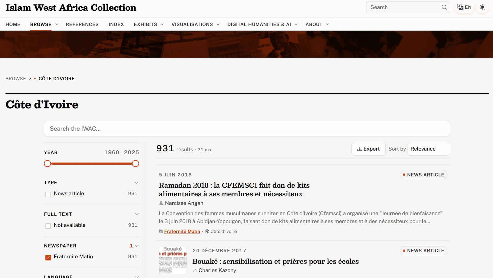
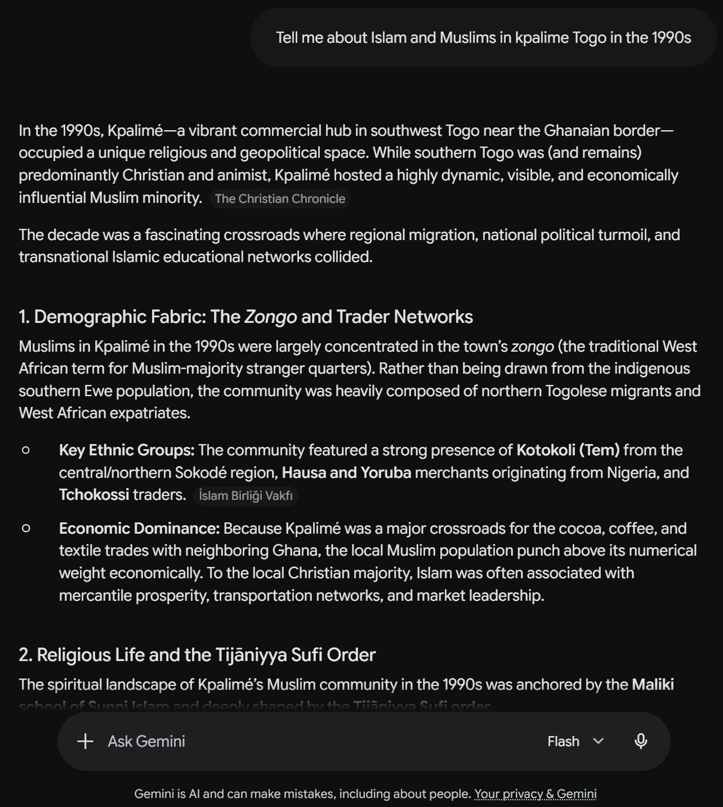
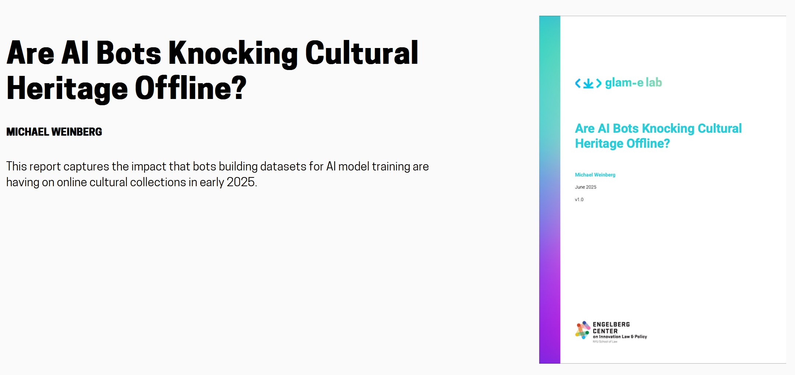

The Islam West Africa Collection
An open archive, built by one historian
Fifteen years of fieldwork and library work — Benin, Burkina Faso, Côte d'Ivoire, Togo — turned into an open-access collection.
Mostly newspaper clippings and Islamic publications: magazines, brochures, tracts
Behind it, a personal library of 30,000+ Zotero items — about 15,000 still unread
Online at islam.zmo.de
In numbers
14,700+ documents
28.1M words
68,122 pages
13 document types
9,315 audiovisual minutes
864 references
Six countries · ~96% French — also Arabic & Hausa · open access since 2023
For the last fifteen years I've worked on Islam in Francophone West Africa, mostly Benin, Burkina Faso, Côte d'Ivoire and Togo. I do a lot of interviews, but I also work extensively with West African newspapers and Islamic publications in every format. I'm a bit of a digital hoarder: besides scanning, I collect a lot online, and I've ended up with more than 30,000 items in my Zotero library, roughly 15,000 of them still unread. I wanted those documents in an open-access database, so I reached agreements with the copyright holders, and in 2023 I launched the Islam West Africa Collection. It now holds more than 14,700 documents on Muslim public life across six West African countries — mostly newspaper clippings and Islamic publications of every kind, magazines, brochures, tracts — and about 96% of it is in French. I built it, and I maintain it alone, which is why AI matters here at all: language models already do the work a team would, OCR on degraded scans, entity recognition, sentiment analysis. So far I've used AI to enrich the collection and its metadata; today is about opening it up to a wider audience.
The Islam West Africa Collection
An overview of the collection
A screenshot of the collection's public site, islam.zmo.de, built on Omeka S — just a feel for the material before we get to why keyword search falls short. The QR code and the link both go straight to the live site, and I'm glad to browse it live if you'd like. One thing worth flagging now: it's mostly French, but not only — there are documents in Arabic and in Hausa as well, which matters once we get to searching across languages.
The "El Hadj" problem
Why keyword search falls short

The faceted search of the IWAC.
Keyword search has built-in problems. I mitigated what I could:
Spelling variants → authority files merge 20+ formsForming a query → autocomplete and facets guide youPolysemy → "hadj" = pilgrimage and the "El Hadj" honorific
The real gap
The search box assumes you already know it.
I want the collection open to researchers, but also to the general public — especially Muslims from these West African countries tracing their own communities' history. Public dissemination matters to me as much as scholarship. So I built the best search engine I could: facets, autocomplete, and authority files that pull the many spellings of a name back together. Those mitigate a lot. But some problems with keyword search run deeper than any of those tools can reach. Take "hadj": it returns two unrelated things at once — articles about the pilgrimage, and the hundreds of men who carry "El Hadj" as an honorific. Synonymy, polysemy and transliteration, all at once, and no facet untangles them. The interaction model is a barrier too: a keyword box assumes you type one query and judge a ranked list produced by an algorithm you never see, so the search box becomes part of the collection's machinery of selection. Most users have no reason to know that. I've worked with this corpus since 2015; I know how it's organised and tagged, and new users don't — several have told me they find it intimidating. So I went looking for another way in, and a chatbot became an obvious candidate: more and more people ask their questions in plain language, not in keywords, Booleans and facets.
Why not just ask AI?
Fluent (and generic) answers, dubious sources

Gemini on Islam in Kpalimé — fluent, but generic and dubiously sourced. See the chat ↗
People now ask AI directly , not a search boxBare models invent citations — worse for Africa, with far less training dataWeb search helps , but the sources are random — mostly WikipediaThe IWAC? Crawled by their bots, yet barely used and badly cited
More and more people skip the search box entirely and just ask an AI, so it's worth asking what they actually get. A bare chatbot is frozen at its training data and cut off from the primary sources, so it invents plausible-looking citations — and that's worse for Africa, which is thinly represented in the training data to begin with. The big commercial chatbots now search the web as they answer, which does cut the hallucinations. But the sourcing is haphazard: they lean heavily on Wikipedia, which has very little on something as specific as Islam in West Africa. Now and then one even pulls a record from the IWAC, but never systematically and never comprehensively. What you get is fluent, confident and broad. Here's Gemini on Islam in Kpalimé in the 1990s: a long, polished answer, sourced to things like "The Christian Chronicle" and a Turkish foundation. And here's the irony — my collection is crawled constantly by these companies' bots, yet ask a model a precise question about Kpalimé and it has no real grounding in what is actually in the archive. It can scrape the collection; it cannot use it well.
An approach
Two layers: plumbing and intelligence
The MCP server — plumbing
Structured, read-only access to the collection that any AI assistant can call.
The agent skill — intelligence
The methodology for using it well — a historian's method, written down.
I built two things, and I'll introduce both before showing either. An MCP server that gives any AI chatbot structured, read-only access to the IWAC: the plumbing. And an agent skill that encodes how to do research with it properly: the intelligence. Then we'll live-demo the MCP server with Claude. After that I'll close with what this arrangement means for African collections in the age of AI scraping, and the fear of digital colonialism. The claim to hold onto: the skill, a plain-text file, is where the real contribution lives.
Model Context Protocol · open standard, Nov 2024
Why a server, not just a chatbot?
RAG
Proven for heritage. But it copies the collection out, chunks records, and retrieves by a similarity the user never sees.
MCP
Ingests nothing . The data stays put; the server holds the logic; the model just asks and answers. modelcontextprotocol.io
The analogy
Like IIIF for images: a shared interface, without handing over the originals. Build the server once — Claude, ChatGPT, or open-source models all connect.
The Model Context Protocol is an open standard, released in November 2024, for connecting AI assistants to external data through a defined set of tools. A server publishes the queries it is willing to answer, and any compliant assistant can call them. MCP is to AI what IIIF is to images: just as IIIF let institutions expose high-resolution images through a common interface without surrendering the originals, MCP lets them expose search and metadata to AI assistants without ceding the underlying data. The common approach today is retrieval-augmented generation, or RAG: the model fetches passages from a prepared index at query time and composes an answer from them. RAG has proved its worth for cultural heritage. But it usually means copying collection data into an external store, fragmenting records into chunks that lose their context, and retrieving through similarity calculations the user never sees. A different route, the "Small Models for GLAM" work, fine-tunes a specialised model on the collection itself. MCP offers a complementary path: a standardised interface that lets any model, commercial or open-source, query a collection without retraining. MCP draws the line differently: nothing is ingested, chunked, or used for training. The server holds the logic; the model only handles the two ends, understanding the question and composing the answer. Build the server once, and any model can be the interface.
Agent skills
What is a skill.md?
A skill is a methods handbook for a machine reader — loaded only when a request matches its purpose.
Competence by reading, not retraining
Versioned, reviewed, refined — a prompt is typed once and lost
An open standard across agents — no vendor lock-in, like MCP
Born in coding agents — the format fits any domain
---
name: iwac-mcp
description: Structured research workflow for the
Islam West Africa Collection MCP server.
---
## Always search in French
The question may be in any language; the corpus is French.
Expand transliterations: Tabaski = Aïd el-Kébir.
So what is a skill? A methods handbook, written in plain language, that the agent reads into context when a request matches its purpose — structured instructions that walk it through the steps. The model gains a specific competence by reading, not by retraining. The difference from a prompt is durability and accountability: a prompt is typed once and lost, whereas a skill file is versioned, reviewed by collaborators, published, and refined over time. It turns tacit expertise into an explicit, inspectable artefact — how I search this collection, which biases I have to disclose. And like MCP, skills are an open standard across agents, so none of this locks you to one vendor. They're mostly used for coding: telling an agent how to run a routine, format an output, or follow a snippet to get a result. But the format works just as well for the social sciences — how to behave like a historian, how to read a corpus critically, what to know about a particular collection.
What you can ask it
The IWAC MCP server
"Newspaper articles on Islam in Abidjan , in the 1990s"
articles place · period
"Islamic publications on secularism in Togo and Benin"
publications subject · country
"Academic references on Muslim women in Burkina Faso"
references subject · country
One plain-language request; the model picks the tools and combines the filters.
~20 tools · 6 subsets
Read-only : search, full text, authority records, sentiment, statsVerifiable : every call a lookup, no AI at query timeTraceable : every result links to its canonical recordOne click : installs in Claude Desktop, nothing to administer
Start with what the server lets you ask. You put the question in plain language. Newspaper articles on Islam in Abidjan in the nineties; Islamic publications on secularism in Togo and Benin; academic references on Muslim women in Burkina Faso. Each one mixes a different part of the collection with a different set of filters — place, period, subject, country — and the model works out which tools to call and how to combine them. You say what you want; the server handles how to get it.
Underneath there are around twenty tools across six subsets: article search, full text, authority records for people, places and organisations, precomputed sentiment, collection statistics. The principle behind all of them is verifiability. The server generates nothing at query time. Every AI enrichment was computed in advance and stored as ordinary data, so a call is only ever a lookup against the openly published dataset, and every result returns a URL straight to the canonical IWAC record. In Sternfeld's phrase, a walled garden: the model can cite only what the collection actually holds.
It installs in one click for Claude Desktop, nothing to administer, which matters if the point is access for non-specialists. I'm working on easier ways in too. Let me show you.
Inside the server · semantic search
Search by meaning, not words
1 · Ask
Your question
« Islam et laïcité au Burkina Faso »
Plain language — and any language works.
→
2 · Embed
Turned into coordinates
An embedding model (Gemini) maps the text to 768 numbers — one point in a space of meaning.
laïcité → [0.07, -0.12, 0.93, …]
Every article was mapped the same way, in advance.
→
3 · Match
Nearest points win
Cosine similarity ranks all 12,000+ articles by how close they sit — closest in meaning, not in wording.
Why it matters
Finds the right articles even when they never say « laïcité » — secularism, Franco-Arabic schools, family-code debates. The one tool that runs a model live, just to turn your question into coordinates.
This is the one feature that really goes past matching words, so it is worth a minute on how it works. Keyword search asks which articles contain this string. Semantic search asks which articles mean the same thing. Three steps. You ask in plain language — here, Islam et laïcité au Burkina Faso — and it can be in any language, because the embedding model is multilingual. That question is then turned into an embedding: the model, currently Gemini, maps the text to about 768 numbers. Think of them as coordinates — a single point whose position captures the meaning. The crucial part is that every article in the collection was put through the same model ahead of time, so all twelve thousand of them are already points in the same space; that is precomputed and shipped inside the dataset, just like the sentiment and the abstracts. The server then takes your question's point and measures how close it sits to every article's point — by cosine similarity — and returns the nearest, ranked. So a question about laïcité surfaces pieces on secularism, on Franco-Arabic schooling, on family-code reform — articles that are about the idea even when the word never appears, which is exactly what keyword search walks past. Two honest points. Remember I said the server runs no AI at query time — this is the single exception: it calls the embedding model once, on your question, and nothing else. And it is optional, off by default, because that one call needs a Google key; I want to swap in a small local model so it needs no account at all. It complements keyword search rather than replacing it — for an exact name or date, you still want an exact match. Now, how the skill decides when to reach for which: the method.
The IWAC skill in motion
A five-phase research method
Two depths, chosen up front:
Briefdefault
a quick scan and a few close reads
Extended
the full five-phase analysis below
Scoping — what does the collection even hold for this question, before any keyword?Systematic searching — French + transliteration variants (Tabaski = Eid al-Adha); log every search, including null resultsDeep reading — full text and sentiment, article by article
Triangulation — cross-check articles, publications, references, index entriesSynthesis — findings with source attribution and confidence grades
The point
Twenty tools give reach, not judgement. The judgement lives in the skill.
Beyond the server, I wanted the model to know how to behave, to carry my own knowledge of the collection as a historian working with primary sources. The server has the data, but none of the judgement. It can't scope a question, can't cross-check one source type against another, can't tell you how far to trust an answer. Twenty tools give you reach, not judgement, and that judgement has to live somewhere. It lives in the skill. Before any research, the skill asks how deep to go: a quick Brief pass for a fast overview, or a full Extended analysis — and it defaults to Brief, saving the heavy lifting for when a question earns it. The Extended path is a five-phase workflow drawn from how archival research actually works. Scoping first: what is even here for this question, before a single keyword. Then systematic searching, in French, with the transliteration variants built in (Tabaski and Aïd el-Kébir both mean Eid al-Adha), and every search logged, including the ones that come back empty. Deep reading of the strongest articles. Triangulation across articles, publications, references and index entries. And synthesis: findings with explicit sources and a confidence grade, strong, moderate, or weak.
The curator's method, in full
iwac-mcp · SKILL.md
Scroll to read the whole file — 190 lines, open source at github.com/fmadore/iwac-mcp-server
This is the actual artefact the agent reads — plain markdown, versioned on GitHub: the five-phase workflow, the search-in-French rule and transliteration variants, the bias-disclosure and confidence-grading requirements. Scroll through it to make the point that the method is explicit and reviewable, not a black box.
Live demo
From a plain question to cited sources
Installed as a Claude Desktop extension — read-only, no API key for the core tools.
One real question, and the skill runs the method live.
Scopes the collection, then searches it in French
Reads the strongest hits in full
Answers with every claim linked to its IWAC record
Enough description — here it is, installed in Claude Desktop as a one-click extension, read-only, no API key for the core tools. Let me put one real question to it. The skill opens by asking how deep to go; I'll choose Extended so you see the full method. Then we watch it work: scope the collection, search it in French, read the strongest articles in full, then come back with an answer where every claim links to its record in the archive. [Live demo cue: open Claude Desktop, run the query, show the citations and the IWAC links.] If the network misbehaves, I'll walk through a saved run.
The stakes
Whose infrastructure? African collections and AI extraction

39 of 43 heritage institutions hit by AI-bot traffic spikes (Weinberg, GLAM-E Lab, 2025); Wikimedia: 65% of its costliest traffic is bots. Read it ↗
The default is extraction — public institutions and open-access labour subsidising commercial AI
MCP, a third path — the collection stays put; the institution decides what the AI sees
Yékú's paradox · 2026
Un-digitised, an African archive is invisible to AI; digitised, it's exposed to scraping — the incomplete corpus becomes the single story , the colonial library rebuilt in the training set.
Step back from the tooling: who is this for, and who pays? The default today is extraction. A 2025 GLAM-E Lab survey found 39 of 43 cultural-heritage institutions hit by traffic spikes, mostly AI-training bots that ignore robots.txt; Wikimedia reports 65% of its most expensive traffic is bots, not people. I've seen a big spike on the IWAC myself, out of the US and China. I'm proud of the collection, but thousands of visitors a day seems a bit much for a database on Islam in West Africa. Underfunded public institutions, and the labour that produced these open-access collections, are subsidising commercial AI — digital colonialism in its newest form. The stakes are sharper for African collections. Yékú names the paradox at the heart of AI-mediated access: un-digitised, African archives are invisible to the models, absent from the training data and so from what AI can say about the continent; digitise them, and you expose the same materials to extractive scraping. An incomplete corpus then risks becoming the definitive representation, delivered with one uniform authority: Adichie's "single story" at machine scale, or what Yékú, after Mudimbe, calls the colonial library rebuilt inside the training set. MCP offers a third path: the collection stays put, and the institution decides what the AI can see.
Conclusion
A real opening for public access — not a panacea: it finds what you ask for, not the serendipity of the stacks. And still: for whom?
Next: a small open-source model on the IWAC server, answering on the website itself — no install, no account. github.com/fmadore/iwac-mcp-server
A few honest caveats to close on. I'm not claiming the MCP server solves the problems I've raised today; it raises others of its own. And it's convincing — genuinely convincing. Knowing this collection, I'm amazed by the quality of the answers, which is exactly the risk: that we start to take them for granted. There's a subtler loss too. Working in an archive the old way, you get serendipity: you find the thing you weren't looking for. I worry this method gives you precisely what you ask for, and nothing you didn't think to ask for. So it's a very promising avenue for public dissemination, but not a replacement for the archive. Then the floor: answers are only ever as good as the metadata underneath. The server surfaces what's catalogued; it creates nothing. The unglamorous curatorial work — cleaning, standardising, reconciling spellings — is the foundation, not a step to automate away. And the question the protocol can't settle: CARE asks what FAIR doesn't, not just who controls the data, but who benefits. A West African collection hosted at a German institute, for whom are we doing this? Co-creating these access layers with West African institutions is the unfinished part. What's next: I want to put a small, open-source model on the IWAC server itself, answering directly on the website against these same tools, so anyone, a student in Ouagadougou included, can use it without installing a thing or opening an account with an AI company. Thank you, and I'd welcome the hard questions, especially about where this breaks.